Chapter 2: The Changing Face of Non-Democratic Rule
Xavier Marquez
2016-10-28
Introduction
This vignette shows how to replicate and extend the charts in chapter 2 of my book Non-democratic Politics: Authoritarianism, Dictatorships, and Democratization (Palgrave Macmillan, 2016). It assumes that you have downloaded the replication package as follows:
if(!require(devtools)) {
install.packages("devtools")
}
devtools::install_github('xmarquez/AuthoritarianismBook')It also assumes you have the dplyr, ggplot2, scales, forcats, and knitr packages installed:
if(!require(dplyr)) {
install.packages("dplyr")
}
if(!require(ggplot2)) {
install.packages("ggplot2")
}
if(!require(scales)) {
install.packages("forcats")
}
if(!require(forcats)) {
install.packages("scales")
}
if(!require(knitr)) {
install.packages("knitr")
}Figure 2.1: Proportion of the world’s population living under a constitution claiming to be democratic.
This figure shows the proportion of the world’s population living under a constitution claiming to be democratic. The data on mentions of democracy in constitutions is from texts gatherd by the Comparative Constitutions Project, with mentions extracted by me and put in the approrpiate format; population data is from Gleditsch (2010) and the World Bank.
Original figure
library(AuthoritarianismBook)
library(dplyr)
library(ggplot2)
library(forcats)
data <- left_join(democracy_mentions_yearly ,
population_data %>%
select(-cown:-in_system)) %>%
mutate(has_mention_na = ifelse(!has_constitution, "No constitution",
ifelse(has_mention, "Yes", "No")),
has_mention_na = fct_relevel(has_mention_na,
"No constitution"))## Joining, by = c("country_name", "GWn", "year", "GWc")ggplot(data = data %>% filter(year > 1815), aes(x=year,fill = has_mention_na, weight = prop)) +
geom_bar(width=1) +
theme_bw() +
theme(legend.position = "bottom") +
labs(fill = "Does the constitution mention democracy?",
x = "Year",
y = "Percent of the world's population\nliving in independent states") +
guides(fill = guide_legend(title.position = "top")) +
scale_y_continuous(breaks = seq(from=0, to=1,by=0.1),
label = scales::percent)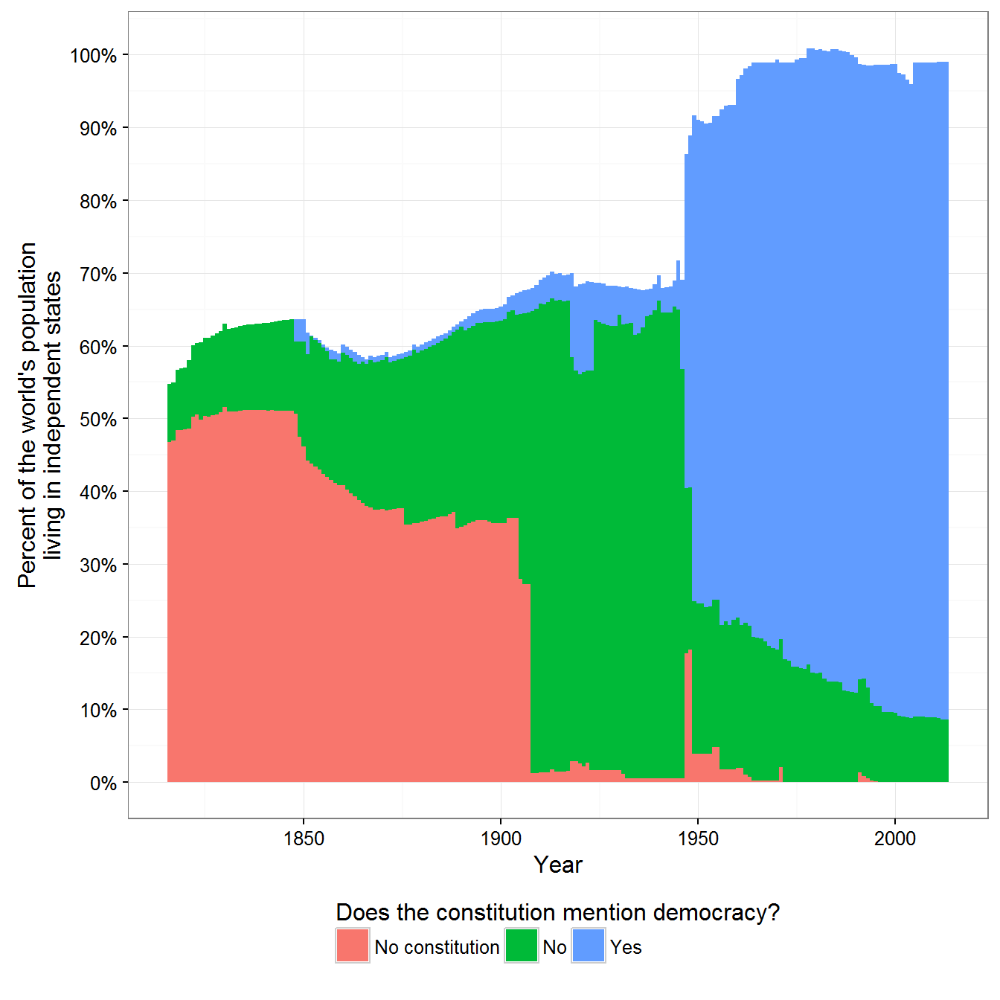
Extension: visualizing the mentions of democracy per country
We can visualize all mentions of democracy in every country:
data <- democracy_mentions_yearly %>%
mutate(constitutional.event = fct_lump(constitutional.event, 2)) %>%
group_by(country_name) %>%
mutate(year_first_mention = ifelse(any(has_mention),
min(year[ has_mention ]),
NA),
year_first_mention = ifelse(year_first_mention == year,
year_first_mention,
NA)) %>%
ungroup()
ggplot(data = data %>%
filter(in_system),
aes(x=fct_rev(reorder(country_name,year,FUN = min)),
y = year)) +
geom_tile(aes(fill = has_mention)) +
geom_point(aes(shape = constitutional.event), alpha = 0.3) +
geom_text(aes(y = year_first_mention,
label = year_first_mention),
check_overlap = TRUE,
size = 2) +
coord_flip() +
labs(x = "",
shape = "Constitutional\nevent",
fill = "Does it mention democracy?") +
theme_bw() +
theme(legend.position = "top") +
guides(fill = guide_legend(title.position = "top"),
shape = guide_legend(title.position = "top"))## Warning: Removed 14500 rows containing missing values (geom_point).## Warning: Removed 17342 rows containing missing values (geom_text).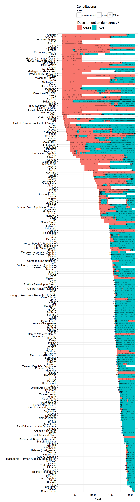
Figure 2.2: Number of States with Democratic and Non-democratic Regimes
Original figure
This figure shows the number of states with democratic and non-democractic regimes. Democracy data is from Pemstein, Meserve, and Melton (Pemstein, Meserve, and Melton 2010), extended by the author to the 19th century and transformed to a probability scale (Márquez 2016). Values close to one indicate that the country is almost certainly a democracy according to current scholarly standards, values close to zero that it is almost certainly not a democracy, and values in between that the regime may have characteristics of both democracy and non-democracy, and as a result there is disagreement among scholars as to how democratic the regime is, or whether it is democratic.
data <- extended_uds %>%
filter(in_system) %>%
mutate(category = cut(index,
breaks = c(0,0.2,0.4,0.6,0.8,1),
labels = c("0-0.2, clearly undemocratic",
"0.2-0.4",
"0.4-0.6, hybrid or ambiguous",
"0.6-0.8",
"0.8-1, clearly democratic"),
include.lowest = TRUE))
ggplot(data = data, aes(x=year, fill = category)) +
geom_bar(width=1) +
theme_bw() +
theme(legend.position = "bottom") +
labs(fill = "Democracy score \n(extended Unified Democracy Scores, probability scale)",
x = "Year",
y = "Number of independent states\nin the international system") +
guides(fill = guide_legend(title.position = "top", nrow = 2)) +
scale_fill_brewer(type = "div", palette = "RdBu") 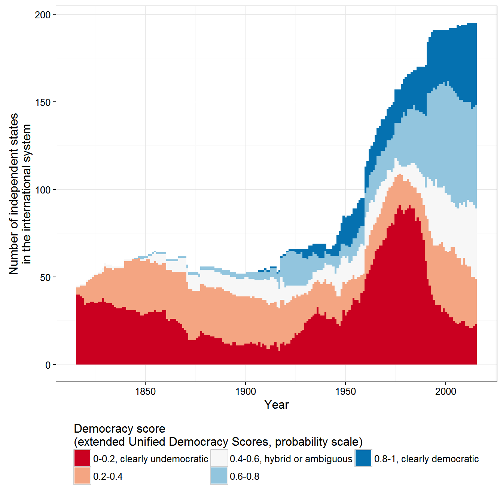
Extension 1: Democratic states as a proportion of the number of states in the state system
Since the number of states in the international system varies over time, it might also be useful to visualize the same information as a proportion of the number of states in the international system. (The actual membership of the “system of states” is contentious; see Gleditsch and Ward (1999), as well as the vignette on “State system membership”):
ggplot(data = data, aes(x=year, fill = category)) +
geom_bar(width=1, position = "fill") +
theme_bw() +
theme(legend.position = "bottom") +
labs(fill = "Democracy score \n(extended Unified Democracy Scores, probability scale)",
x = "Year",
y = "Proportion of independent states\nin the international system") +
guides(fill = guide_legend(title.position = "top", nrow = 2)) +
scale_fill_brewer(type = "div", palette = "RdBu") +
scale_y_continuous(labels = scales::percent)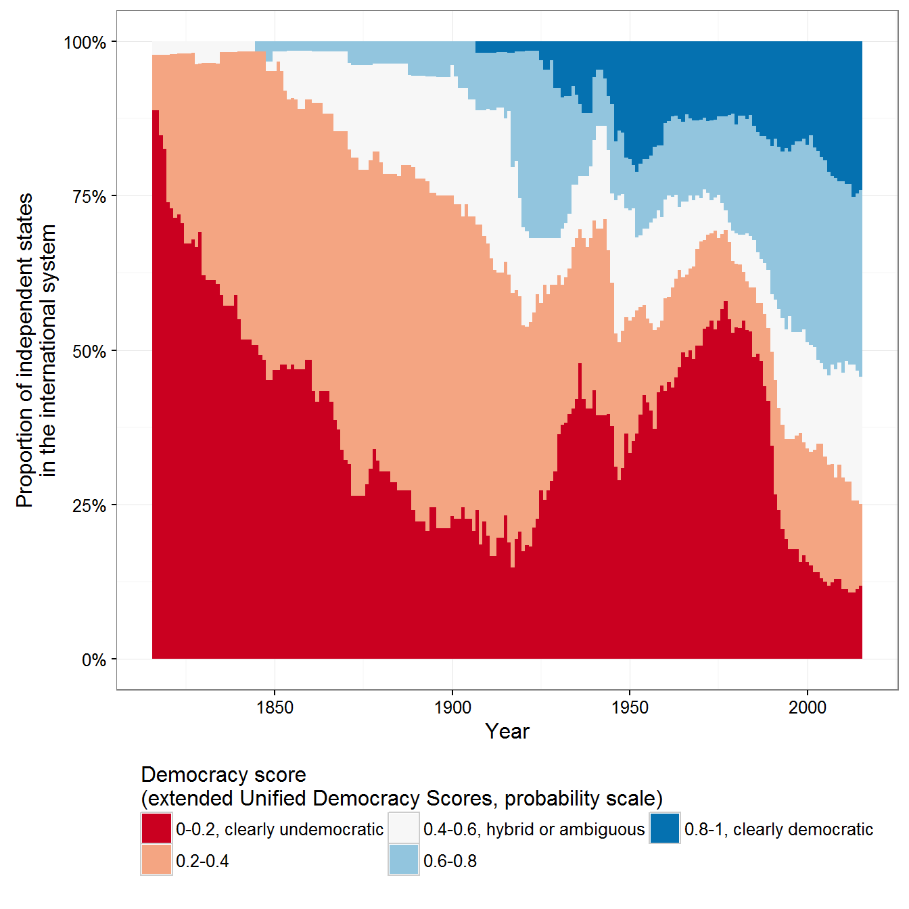
Extension 2: Democratic states weighted by population
Since states vary in population, it is also useful to visualize the same data weighted by population:
data <- left_join(data, population_data %>% select(country_name, GWn, year, prop))## Joining, by = c("country_name", "GWn", "year")ggplot(data = data, aes(x=year, fill = category, weight = prop)) +
geom_bar(width=1) +
theme_bw() +
theme(legend.position = "bottom") +
labs(fill = "Democracy score \n(extended Unified Democracy Scores, probability scale)",
x = "Year",
y = "Population of states\nin the international system") +
guides(fill = guide_legend(title.position = "top", nrow = 2)) +
scale_fill_brewer(type = "div", palette = "RdBu")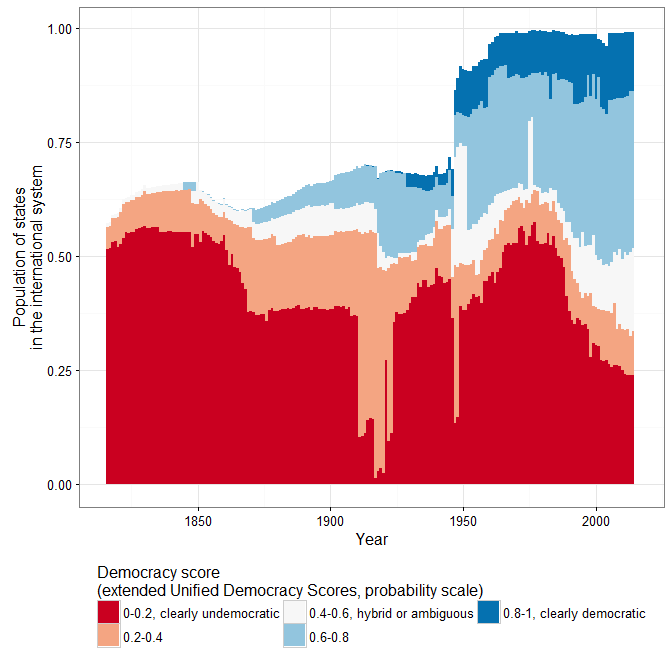
Extension 3: Democracy scores in every country
It is also possible to visualize this data for each country in the dataset separately, including for periods when they are not in the international system:
data <- extended_uds %>%
mutate(country_name = fct_rev(reorder(as.factor(country_name), year, FUN = min)))
ggplot(data = data,
aes(x = country_name,
y = year)) +
geom_point(data = data,
aes(color = index, size = in_system),
shape = 15) +
scale_color_gradient2(midpoint = 0.5) +
coord_flip() +
labs(x = "", color = "UD Score", size = "In system of states") +
theme(legend.position = "top") +
scale_size_discrete(range = c(1,3)) +
scale_y_continuous(breaks = unique(c(data$year[ data$year %% 25 == 0],
max(data$year),
min(data$year))))## Warning: Using size for a discrete variable is not advised.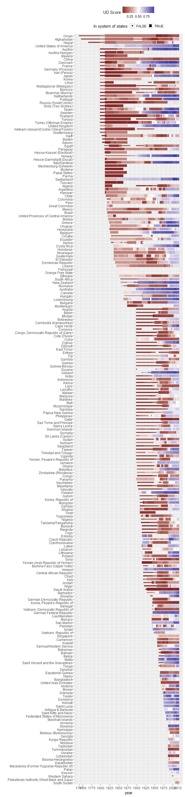
Figure 2.3: Changing Frequency of Terms Referring to Non-democracy
Figure 2.3 uses data from Google Ngrams. Run the same query here.
Figure 2.4: The expansion of suffrage around the world
Original figure
Figure 2.4 uses the PIPE dataset (Przeworski 2013). Some countries with franchise rules set at the sub-national level (e.g., the USA in the 19th century) are excluded.
data <- PIPE %>%
filter(!is.na(f_simple))
ggplot(data = data, aes(x=year, fill=f_simple)) +
geom_bar(width=1) +
theme_bw()+
theme(legend.position="bottom") +
labs(fill="Type of franchise", x="Year", y= "Number of states") +
guides(fill=guide_legend(nrow=3,title.position="top")) +
scale_fill_brewer(type = "div", palette = "RdBu")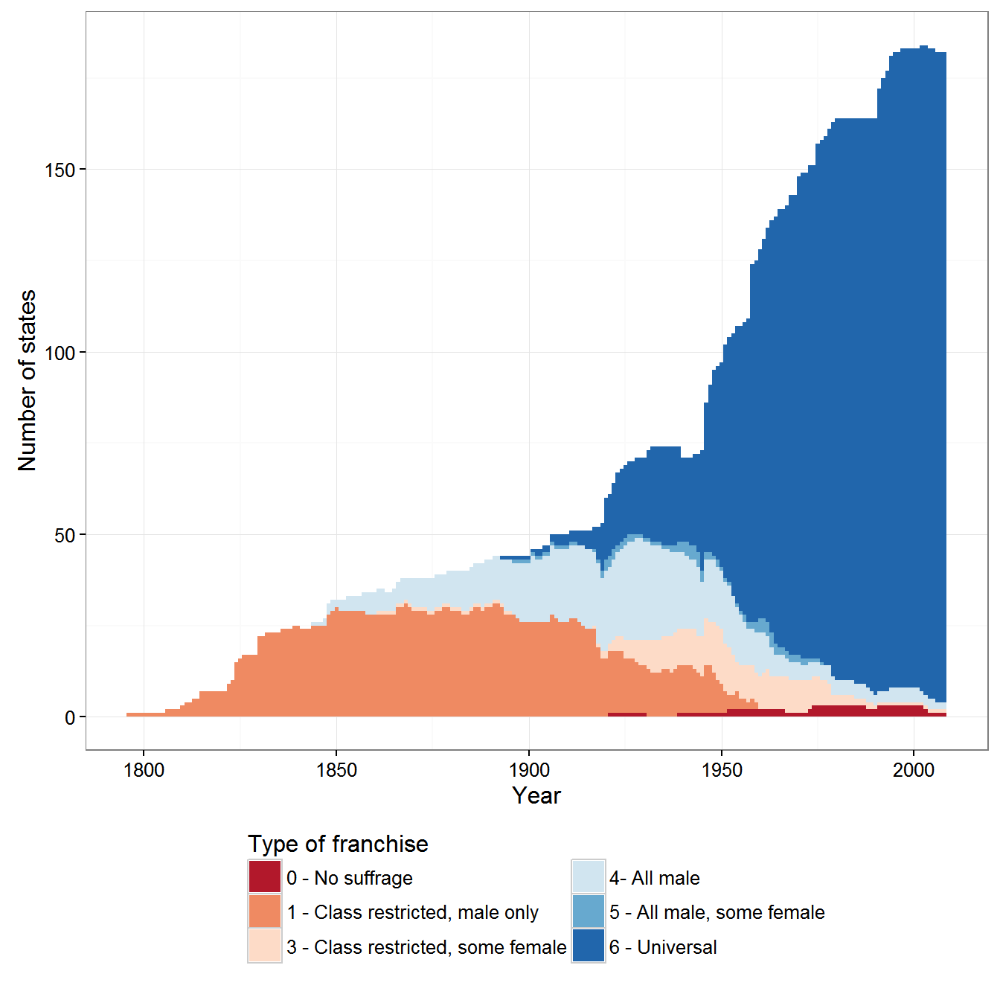
Extension 1: Franchise rules per country
It is possible to use the information in the PIPE dataset to produce a disaggregated look at franchise rules in every country in the world. The figure below shows these restrictions, along with the date where the country first arrived at “universal” suffrage, if any (countries at the top achieved universal sudffrage earlier):
data <- PIPE %>%
group_by(country_name) %>%
arrange(year) %>%
mutate(total_elections = preselec + legelec,
total_elections = ifelse(is.na(total_elections) & !is.na(f),
0,
total_elections)) %>%
filter(!is.na(total_elections)) %>%
mutate(cumulative_elections = cumsum(total_elections),
f = ifelse(max(cumulative_elections) == 0 & is.na(f),
0,
f)) %>%
ungroup() %>%
mutate(f_male = ifelse(f < 10,
f,
round(f/10)),
f_female = ifelse(f < 10,
0,
f %% 10),
f_male = ifelse(f_male %in% c(0,1), f_male, f_male + 1),
f_male = ifelse(is.na(f_male) & (cumulative_elections >= 1),
2,
f_male),
f_female = ifelse(f_male == 2, 0, f_female),
f_female = factor(f_female, labels = c("0-No inclusion / not indicated",
"1-Narrower than men",
"2-Equal to men")),
f_male = factor(f_male,
labels = c("0-No suffrage",
"1-Estate",
"2-Subnational",
"3-Property only",
"4-(Property OR
income OR
taxes OR
exercise of profession OR
educational titles)
AND literacy",
"5-Property OR
income OR
taxes OR
exercise of profession OR
educational titles",
"6-Literacy only
OR (Literacy
OR property OR
income OR
taxes OR
exercise of profession OR
educational titles)",
"7-All the economically independent",
"8-All"),
ordered = TRUE)) %>%
group_by(country_name) %>%
mutate(year_universal = min(year[ f == 72 ], na.rm = TRUE),
year_universal = ifelse(year_universal == year,
year_universal,
NA)) %>%
ungroup()## Warning in min(c(1923, 1924, 1925, 1926, 1927, 1928, 1929, 1930, 1931,
## 1932, : no non-missing arguments to min; returning Inf
## Warning in min(c(1923, 1924, 1925, 1926, 1927, 1928, 1929, 1930, 1931,
## 1932, : no non-missing arguments to min; returning Inf
## Warning in min(c(1923, 1924, 1925, 1926, 1927, 1928, 1929, 1930, 1931,
## 1932, : no non-missing arguments to min; returning Inf
## Warning in min(c(1923, 1924, 1925, 1926, 1927, 1928, 1929, 1930, 1931,
## 1932, : no non-missing arguments to min; returning Inf
## Warning in min(c(1923, 1924, 1925, 1926, 1927, 1928, 1929, 1930, 1931,
## 1932, : no non-missing arguments to min; returning Inf
## Warning in min(c(1923, 1924, 1925, 1926, 1927, 1928, 1929, 1930, 1931,
## 1932, : no non-missing arguments to min; returning Inf
## Warning in min(c(1923, 1924, 1925, 1926, 1927, 1928, 1929, 1930, 1931,
## 1932, : no non-missing arguments to min; returning Inf
## Warning in min(c(1923, 1924, 1925, 1926, 1927, 1928, 1929, 1930, 1931,
## 1932, : no non-missing arguments to min; returning Inf
## Warning in min(c(1923, 1924, 1925, 1926, 1927, 1928, 1929, 1930, 1931,
## 1932, : no non-missing arguments to min; returning Inf
## Warning in min(c(1923, 1924, 1925, 1926, 1927, 1928, 1929, 1930, 1931,
## 1932, : no non-missing arguments to min; returning Inf
## Warning in min(c(1923, 1924, 1925, 1926, 1927, 1928, 1929, 1930, 1931,
## 1932, : no non-missing arguments to min; returning Infggplot(data = data,
aes(x = fct_rev(reorder(country_name,
year_universal,
FUN = min,
na.rm = TRUE)),
y = year)) +
geom_tile(aes(fill = f_male,
alpha = f_female)) +
geom_text(aes(label = year_universal, y = year_universal),
size = 2,
check_overlap = TRUE) +
scale_fill_brewer(type = "div", palette = "RdBu") +
labs(x = "",
alpha = "Female inclusion",
fill = "Type of franchise") +
theme_bw() +
theme(legend.position = "top") +
guides(fill = guide_legend(title.position = "top", ncol = 1),
alpha = guide_legend(title.position = "top", ncol = 2)) +
scale_y_continuous(breaks = unique(c(PIPE$year[ PIPE$year %% 25 == 0],
max(PIPE$year),
min(PIPE$year)))) +
scale_alpha_discrete(range = c(0.3,1)) +
coord_flip()## Warning in FUN(X[[i]], ...): no non-missing arguments to min; returning Inf## Warning in FUN(X[[i]], ...): no non-missing arguments to min; returning Inf
## Warning in FUN(X[[i]], ...): no non-missing arguments to min; returning Inf
## Warning in FUN(X[[i]], ...): no non-missing arguments to min; returning Inf
## Warning in FUN(X[[i]], ...): no non-missing arguments to min; returning Inf
## Warning in FUN(X[[i]], ...): no non-missing arguments to min; returning Inf
## Warning in FUN(X[[i]], ...): no non-missing arguments to min; returning Inf
## Warning in FUN(X[[i]], ...): no non-missing arguments to min; returning Inf
## Warning in FUN(X[[i]], ...): no non-missing arguments to min; returning Inf
## Warning in FUN(X[[i]], ...): no non-missing arguments to min; returning Inf
## Warning in FUN(X[[i]], ...): no non-missing arguments to min; returning Inf
## Warning in FUN(X[[i]], ...): no non-missing arguments to min; returning Inf
## Warning in FUN(X[[i]], ...): no non-missing arguments to min; returning Inf
## Warning in FUN(X[[i]], ...): no non-missing arguments to min; returning Inf
## Warning in FUN(X[[i]], ...): no non-missing arguments to min; returning Inf
## Warning in FUN(X[[i]], ...): no non-missing arguments to min; returning Inf
## Warning in FUN(X[[i]], ...): no non-missing arguments to min; returning Inf
## Warning in FUN(X[[i]], ...): no non-missing arguments to min; returning Inf
## Warning in FUN(X[[i]], ...): no non-missing arguments to min; returning Inf
## Warning in FUN(X[[i]], ...): no non-missing arguments to min; returning Inf
## Warning in FUN(X[[i]], ...): no non-missing arguments to min; returning Inf
## Warning in FUN(X[[i]], ...): no non-missing arguments to min; returning Inf
## Warning in FUN(X[[i]], ...): no non-missing arguments to min; returning Inf
## Warning in FUN(X[[i]], ...): no non-missing arguments to min; returning Inf
## Warning in FUN(X[[i]], ...): no non-missing arguments to min; returning Inf
## Warning in FUN(X[[i]], ...): no non-missing arguments to min; returning Inf
## Warning in FUN(X[[i]], ...): no non-missing arguments to min; returning Inf
## Warning in FUN(X[[i]], ...): no non-missing arguments to min; returning Inf
## Warning in FUN(X[[i]], ...): no non-missing arguments to min; returning Inf
## Warning in FUN(X[[i]], ...): no non-missing arguments to min; returning Inf
## Warning in FUN(X[[i]], ...): no non-missing arguments to min; returning Inf
## Warning in FUN(X[[i]], ...): no non-missing arguments to min; returning Inf
## Warning in FUN(X[[i]], ...): no non-missing arguments to min; returning Inf## Warning: Removed 15090 rows containing missing values (geom_text).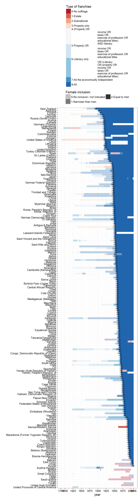
Figure 2.5: Types of Electoral Regimes around the World
Original figure
Figure 2.5 uses the LIED dataset (Skaaning, Gerring, and Bartusevičius 2015), which extends and corrects the PIPE dataset. It is worth noting that LIED is inconsistent with PIPE for the following country-years:
data <- full_join(PIPE %>%
select(country_name,GWn,year,f_simple,f),
lied %>%
select(country_name,GWn,year,male_suffrage,female_suffrage)) %>%
mutate(inconsistent = (male_suffrage == 1 & female_suffrage == 1 & f != 72) |
(male_suffrage == 1 & female_suffrage == 0 & !(f %in% c(7,71,NA))))## Joining, by = c("country_name", "GWn", "year")data %>%
filter(inconsistent) %>%
group_by(country_name, f_simple, f, male_suffrage, female_suffrage) %>%
summarise(min_year = min(year), max_year = max(year), num_years = n()) %>%
knitr::kable(col.names = c("Country",
"PIPE franchise (simplified)",
"PIPE franchise (full)",
"LIED male suffrage",
"LIED female suffrage",
"Min year",
"Max year",
"Num. years"))| Country | PIPE franchise (simplified) | PIPE franchise (full) | LIED male suffrage | LIED female suffrage | Min year | Max year | Num. years |
|---|---|---|---|---|---|---|---|
| Australia | 4- All male | 7 | 1 | 1 | 1901 | 1901 | 1 |
| Austria-Hungary | 1 - Class restricted, male only | 4 | 1 | 0 | 1896 | 1917 | 22 |
| Belgium | 6 - Universal | 72 | 1 | 0 | 1948 | 1948 | 1 |
| Canada | 6 - Universal | 72 | 1 | 0 | 1918 | 1920 | 3 |
| Germany (Prussia) | 1 - Class restricted, male only | 6 | 1 | 0 | 1871 | 1917 | 47 |
| Germany (Prussia) | 6 - Universal | 72 | 1 | 0 | 1918 | 1918 | 1 |
| Greece | 6 - Universal | 72 | 1 | 0 | 1953 | 1955 | 3 |
| Guatemala | 6 - Universal | 72 | 1 | 0 | 1965 | 1965 | 1 |
| Iraq | 4- All male | 7 | 1 | 1 | 1958 | 1979 | 22 |
| Italy/Sardinia | 6 - Universal | 72 | 1 | 0 | 1945 | 1945 | 1 |
| Lebanon | 6 - Universal | 72 | 1 | 0 | 1944 | 1951 | 8 |
| Netherlands | 6 - Universal | 72 | 1 | 0 | 1919 | 1921 | 3 |
| Nicaragua | 6 - Universal | 72 | 1 | 0 | 1955 | 1956 | 2 |
| Palau | 4- All male | 7 | 1 | 1 | 1994 | 2008 | 15 |
| Qatar | 0 - No suffrage | 0 | 1 | 1 | 2003 | 2008 | 6 |
| Rumania | 1 - Class restricted, male only | 4 | 1 | 0 | 1938 | 1945 | 8 |
| Somalia | 0 - No suffrage | 0 | 1 | 1 | 1991 | 2003 | 13 |
| Syria | 5 - All male, some female | 71 | 1 | 1 | 1954 | 1972 | 19 |
| Tuvalu | 4- All male | 7 | 1 | 1 | 1978 | 2008 | 31 |
To recreate the figure, we join the LIED data with the population data from Gleditsch (Gleditsch 2010), extended with World Bank data:
data <- left_join(lied, population_data %>% select(country_name:prop))## Joining, by = c("country_name", "year", "GWn", "GWc")data <- data %>%
mutate(regime2 = ifelse(lexical_index == 0 &
male_suffrage == 1 &
female_suffrage == 0,
"2 No elections, but constitutional male suffrage",
(ifelse(lexical_index == 0 &
male_suffrage == 0,
"1 No elections or provisions for suffrage",
as.character(regime)))),
regime2 = ifelse(lexical_index == 0 &
male_suffrage == 1 &
female_suffrage == 1,
"3 No elections, but constitutional universal suffrage",
as.character(regime2)),
regime2 = ifelse(lexical_index > 0 &
male_suffrage == 0,
"4 Elections with class-limited suffrage",
regime2),
regime2 = ifelse(lexical_index > 0 &
male_suffrage == 1 &
female_suffrage == 1 &
lexical_index < 6,
"6 Limited competition elections with universal suffrage",
regime2),
regime2 = ifelse(lexical_index > 0 &
male_suffrage == 1 &
female_suffrage == 0 &
lexical_index < 6,
"5 Limited competition elections with full male suffrage",
regime2),
regime2 = ifelse(regime == "Male democracy",
"7 Competitive elections with full male suffrage",
regime2),
regime2 = ifelse(regime == "Electoral democracy",
"8 Competitive elections with universal suffrage",
regime2)) %>%
filter(year > 1815)
ggplot(data = data, aes(x=year, fill = regime2, weight = prop)) +
geom_bar(width=1) +
theme_bw()+
theme(legend.position="bottom") +
labs(fill="", x="Year", y= "Proportion of the world's population") +
guides(fill=guide_legend(ncol=1,title.position="top")) +
scale_fill_brewer(type = "div", palette = "RdBu") +
scale_y_continuous(label=scales::percent)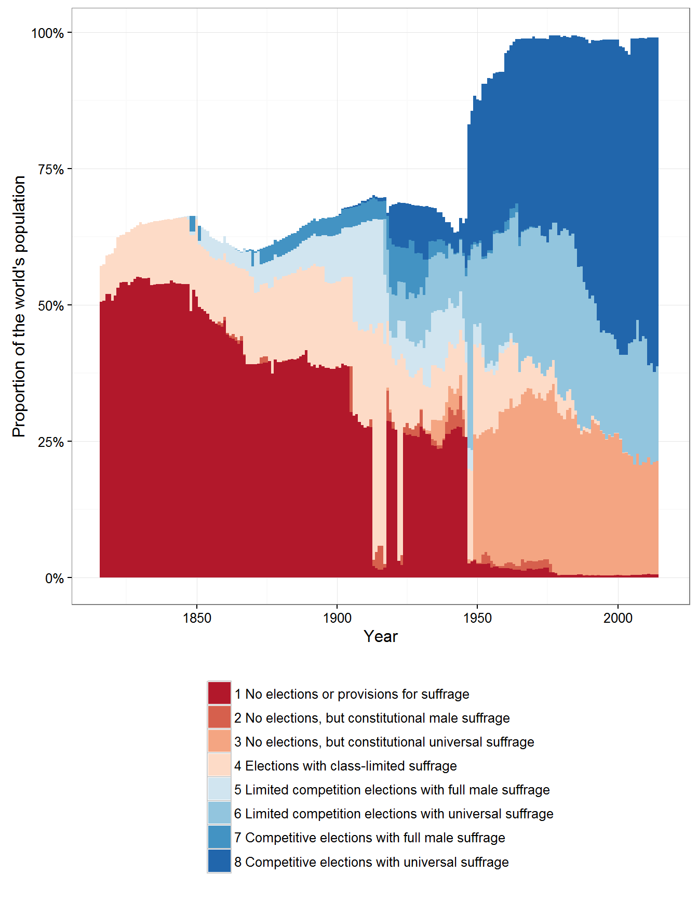
Extension 1: Types of Electoral Regimes around the World, number of states
As in other figures, we can visualize the data by looking at it in terms of the number of states in the international system:
ggplot(data = data, aes(x=year, fill = regime2)) +
geom_bar(width=1) +
theme_bw()+
theme(legend.position="bottom") +
labs(fill="", x="Year", y= "Number of states") +
guides(fill=guide_legend(ncol=1,title.position="top")) +
scale_fill_brewer(type = "div", palette = "RdBu")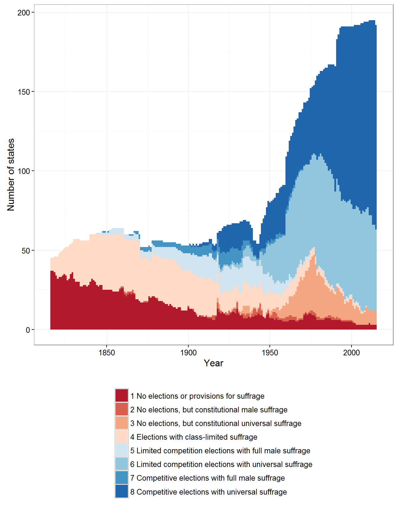
Extension 2: Types of Electoral Regimes around the World, proportion of states in the state system
Or we can visualize it in terms of the proportion of states in the international system:
ggplot(data = data, aes(x=year, fill = regime2)) +
geom_bar(width = 1, position = "fill") +
theme_bw()+
theme(legend.position="bottom") +
labs(fill="", x="Year", y= "Proportion of states in the international system") +
guides(fill = guide_legend(ncol = 1, title.position = "top")) +
scale_fill_brewer(type = "div", palette = "RdBu") +
scale_y_continuous(label=scales::percent)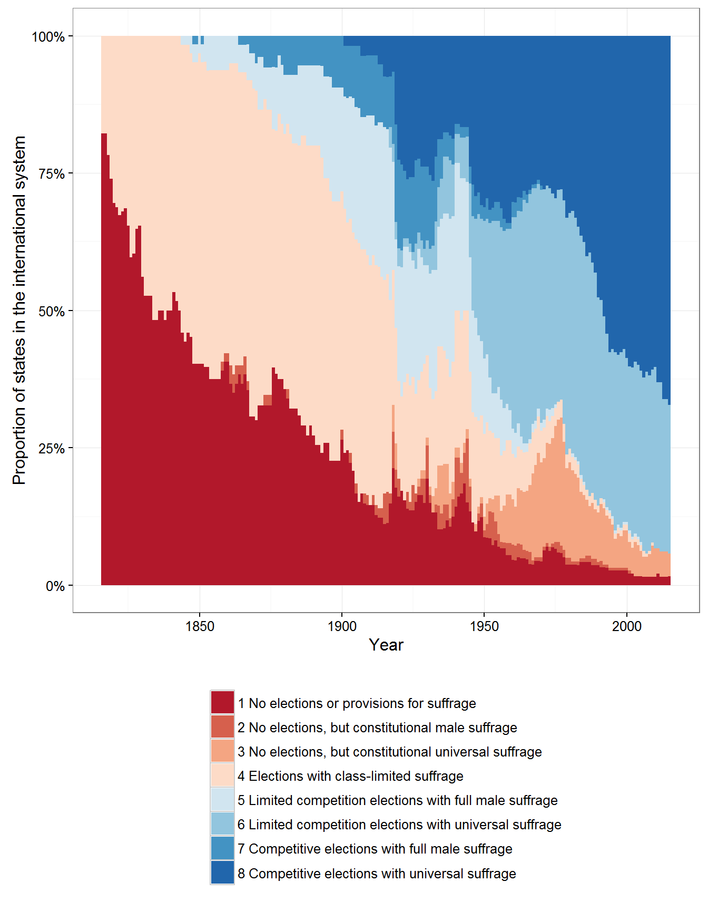
Extension 3: Types of Electoral Regimes around the World, individual states
Or per country, ordered by earliest date of universal suffrage:
data <- data %>%
filter(!is.na(regime2)) %>%
group_by(country_name) %>%
mutate(universal_suffrage_date = ifelse(male_suffrage + female_suffrage == 2,
min(year[ male_suffrage + female_suffrage == 2 ]),
NA),
universal_suffrage_date = ifelse(universal_suffrage_date == year,
universal_suffrage_date,
NA)) %>%
ungroup()
ggplot(data = data,
aes(x = fct_rev(reorder(as.factor(country_name),
universal_suffrage_date,
FUN = min,
na.rm = TRUE)),
y = year)) +
geom_tile(data = data,
aes(fill = regime2)) +
geom_text(aes(label = universal_suffrage_date, y = universal_suffrage_date),
size = 2,
check_overlap = TRUE) +
theme_bw() +
scale_fill_brewer(type = "div", palette = "RdBu") +
coord_flip() +
labs(x = "", fill = "Type of franchise") +
theme(legend.position = "top") +
guides(fill = guide_legend(ncol = 1, title.position="top")) 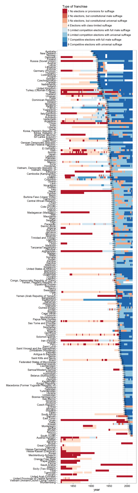
Note that the first date of universal suffrage differs between PIPE and LIED: LIED gives Australia as the first country to have universal suffrage, whereas PIPE gives New Zealand. This is because LIED has more stringent vcriteria for when a country enters the international system (counts as “independent”); by their criteria, New Zealand is not an independent country until 1907. See the vignette on “State system membership” for more discussion of these differences.
Figure 2.6: Types of Executive Selection around the world
Original figure
This figure uses the Polity IV data on executive recruitment (Marshall, Gurr, and Jaggers 2010), excluding periods of anarchy, transition, foreign occupation, and executive-led transition.
polity_annual$exrec2 <- plyr::mapvalues(polity_annual$exrec,
from = sort(unique(polity_annual$exrec)),
to = c(NA,
NA,
NA,
"1-Hereditary",
"2-Hereditary plus narrow elite",
"4-Narrow elite selection",
"5-Self-selection (coup or successful rebellion)",
NA,
"3-Hereditary plus election",
"6-Election",
"6-Election"))
data <- polity_annual
ggplot(data = data, aes(x= year, fill= exrec2) )+
geom_bar(width=1) +
theme_bw() +
theme(legend.position="bottom") +
labs(fill="", x="Year", y= "Number of states") +
guides(fill = guide_legend(ncol = 1, title.position="top")) +
scale_fill_brewer(type = "div", palette = "RdBu")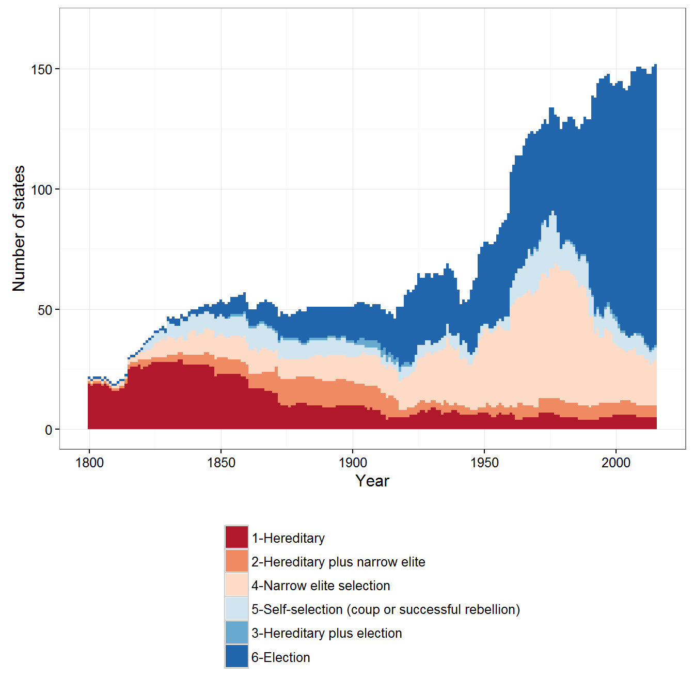
Extension 1: Executive recruitment as a proportion of the number of states in Polity IV
As usual, we can visualize this data as a proportion of the number of states in the dataset (not identical to the number of states in the world system, since Polity does not count all states):
ggplot(data = data, aes(x= year, fill= exrec2) )+
geom_bar(width=1, position = "fill") +
theme_bw() +
theme(legend.position="bottom") +
labs(fill="", x="Year", y= "Proportion of states") +
guides(fill = guide_legend(ncol = 1, title.position="top")) +
scale_fill_brewer(type = "div", palette = "RdBu") +
scale_y_continuous(labels = scales::percent)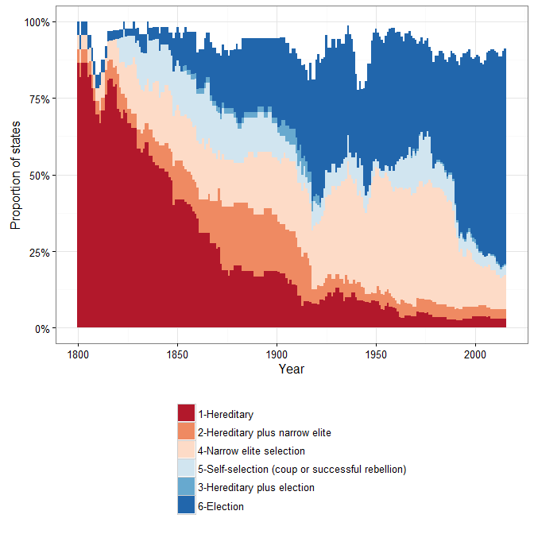
Extension 2: Executive recruitment weighted by population
Or weighted by population:
data <- left_join(data, population_data %>% select(country_name:prop))## Joining, by = c("country_name", "GWn", "year", "GWc")ggplot(data = data, aes(x= year, fill= exrec2, weight = prop))+
geom_bar(width=1) +
theme_bw() +
theme(legend.position="bottom") +
labs(fill="", x="Year", y= "Proportion of world's population") +
guides(fill = guide_legend(ncol = 1, title.position="top")) +
scale_fill_brewer(type = "div", palette = "RdBu") +
scale_y_continuous(labels = scales::percent)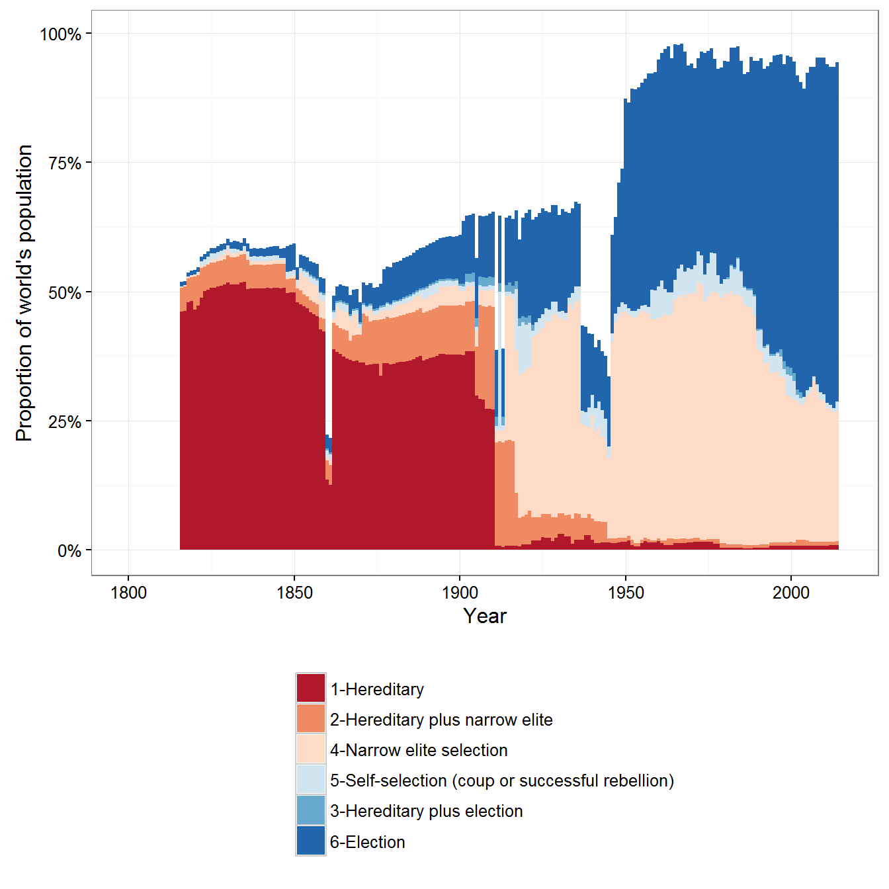
Extension 2: Executive recruitment per country
And we can disaggregate it per country:
ggplot(data = data,
aes(x = fct_rev(reorder(as.factor(country_name),
year,
FUN = min)),
y = year)) +
geom_tile(data = data,
aes(fill = exrec2)) +
theme_bw() +
scale_fill_brewer(type = "div", palette = "RdBu") +
coord_flip() +
labs(x = "", fill = "Executive selection type") +
theme(legend.position = "top") +
guides(fill = guide_legend(ncol = 1, title.position="top")) 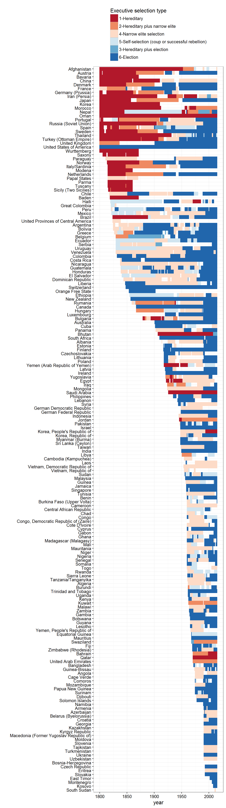
Figure 2.7: Huntington’s Three Waves of Democratization
Original figure
The data on democracy for this figure is from Pemstein, Meserve, and Melton (Pemstein, Meserve, and Melton 2010), extended by me into the 19th century (Márquez 2016). The exact beginning and end of each wave depends on how we measure transitions to democracy. Shaded areas indicate Huntington’s own periodization of the waves of democracy.
data <- extended_uds %>%
group_by(country_name) %>%
mutate(change = index - lag(index)) %>%
group_by(year) %>%
summarise(total_trans = sum(change,na.rm=TRUE)) %>%
ungroup() %>%
mutate(cumulative_trans = cumsum(total_trans))
ypos <- mean(c(-1,max(data$cumulative_trans)))
ggplot(data=data) +
geom_rect(aes(xmin = 1828,
xmax = 1926,
ymin = min(cumulative_trans, na.rm=TRUE) - 1,
ymax = max(cumulative_trans, na.rm=TRUE) +1),
alpha = 0.02,
fill="lightgrey") +
geom_rect(aes(xmin = 1943,
xmax = 1962,
ymin = min(cumulative_trans, na.rm=TRUE) - 1,
ymax = max(cumulative_trans, na.rm=TRUE) + 1),
alpha = 0.02,
fill="lightgrey") +
geom_rect(aes(xmin = 1974,
xmax = 2008,
ymin = min(cumulative_trans,na.rm=TRUE) - 1,
ymax = max(cumulative_trans,na.rm=TRUE) + 1),
alpha=0.02,
fill="lightgrey") +
geom_path(aes(x = year, y = cumulative_trans)) +
theme_bw() +
labs(y = "Cumulative changes in the level of democracy across countries") +
annotate(geom = "text",
x = c(1850,1950,1990),
y = c(ypos, ypos, ypos),
label = c("First wave",
"Second wave",
"Third wave"),
angle=90) +
coord_cartesian(xlim = c(1800,2010),
ylim = c(-1, max(data$cumulative_trans)))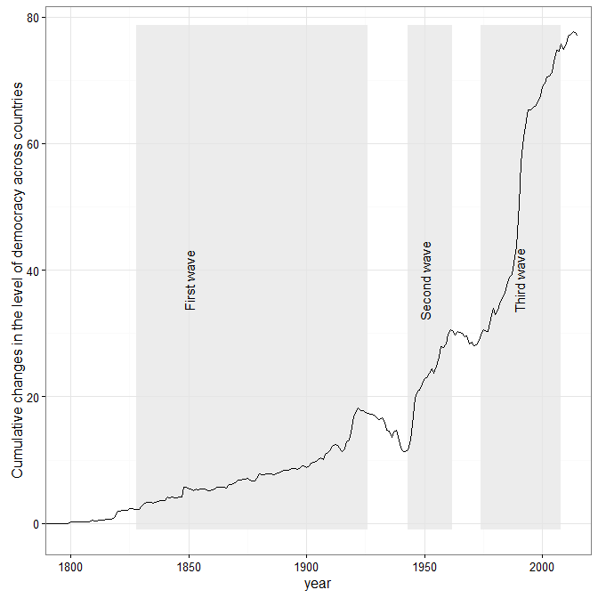
The figure does not show full transitions to democracy, but tracks the overall movement upwards movement of democracy indicator. Other ways of constructing it are possible. For example, using LIED, wean construct a figure that counts only transitions to a LIED index of 4 or above:
Extension 1: Huntington’s three waves using LIED
data <- lied %>%
mutate(democ = as.numeric(lexical_index >= 4)) %>%
group_by(country_name) %>%
mutate(change = democ - lag(democ)) %>%
group_by(year) %>%
summarise(total_trans = sum(change,na.rm=TRUE)) %>%
ungroup() %>%
mutate(cumulative_trans = cumsum(total_trans))
ypos <- mean(c(-1,max(data$cumulative_trans)))
ggplot(data=data) +
geom_rect(aes(xmin = 1828,
xmax = 1926,
ymin = min(cumulative_trans, na.rm=TRUE) - 1,
ymax = max(cumulative_trans, na.rm=TRUE) +1),
alpha = 0.02,
fill="lightgrey") +
geom_rect(aes(xmin = 1943,
xmax = 1962,
ymin = min(cumulative_trans, na.rm=TRUE) - 1,
ymax = max(cumulative_trans, na.rm=TRUE) + 1),
alpha = 0.02,
fill="lightgrey") +
geom_rect(aes(xmin = 1974,
xmax = 2008,
ymin = min(cumulative_trans,na.rm=TRUE) - 1,
ymax = max(cumulative_trans,na.rm=TRUE) + 1),
alpha=0.02,
fill="lightgrey") +
geom_path(aes(x = year, y = cumulative_trans)) +
theme_bw() +
labs(y = "Cumulative transitions to democracy across countries") +
annotate(geom = "text",
x = c(1850,1950,1990),
y = c(ypos, ypos, ypos),
label = c("First wave",
"Second wave",
"Third wave"),
angle=90) +
coord_cartesian(xlim = c(1800,2010),
ylim = c(-1, max(data$cumulative_trans)))
Extension 2: Huntington’s waves using other democracy data:
Other measures give slightly different answers. Here are Huntington’s waves using the Boix-Miller-Rosato measure (Boix, Miller, and Rosato 2012), included in the democracy dataset:
data <- democracy %>%
group_by(country_name) %>%
mutate(change = bmr_democracy - lag(bmr_democracy)) %>%
group_by(year) %>%
summarise(total_trans = sum(change,na.rm=TRUE)) %>%
ungroup() %>%
mutate(cumulative_trans = cumsum(total_trans))
ypos <- mean(c(-1,max(data$cumulative_trans)))
ggplot(data=data) +
geom_rect(aes(xmin = 1828,
xmax = 1926,
ymin = min(cumulative_trans, na.rm=TRUE) - 1,
ymax = max(cumulative_trans, na.rm=TRUE) +1),
alpha = 0.02,
fill="lightgrey") +
geom_rect(aes(xmin = 1943,
xmax = 1962,
ymin = min(cumulative_trans, na.rm=TRUE) - 1,
ymax = max(cumulative_trans, na.rm=TRUE) + 1),
alpha = 0.02,
fill="lightgrey") +
geom_rect(aes(xmin = 1974,
xmax = 2008,
ymin = min(cumulative_trans,na.rm=TRUE) - 1,
ymax = max(cumulative_trans,na.rm=TRUE) + 1),
alpha=0.02,
fill="lightgrey") +
geom_path(aes(x = year, y = cumulative_trans)) +
theme_bw() +
labs(y = "Cumulative transitions to democracy across countries") +
annotate(geom = "text",
x = c(1850,1950,1990),
y = c(ypos, ypos, ypos),
label = c("First wave",
"Second wave",
"Third wave"),
angle=90) +
coord_cartesian(xlim = c(1800,2010),
ylim = c(-1, max(data$cumulative_trans)))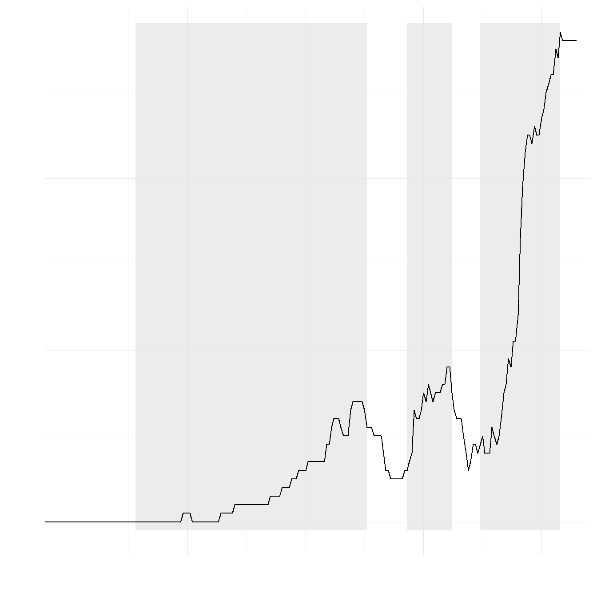
Figure 2.8: Degrees of Constraint on the Executive
The figure uses Polity annual data:
polity_annual$exconst2 <- plyr::mapvalues(polity_annual$exconst,
from = sort(unique(polity_annual$exconst)),
to = c(NA,
NA,
NA,
"0-Unlimited",
"1",
"2",
"3",
"4",
"5",
"6-Executive parity or subordination"))
ggplot(data=polity_annual, aes(x = year, fill = exconst2))+
geom_bar(width=1) +
theme_bw()+
theme(legend.position="bottom") +
labs(fill = "Constraints on the executive", x = "Year", y= "Number of independent states")+
guides(fill = guide_legend(nrow = 1, title.position="top")) +
scale_fill_brewer(type = "div", palette = "RdBu")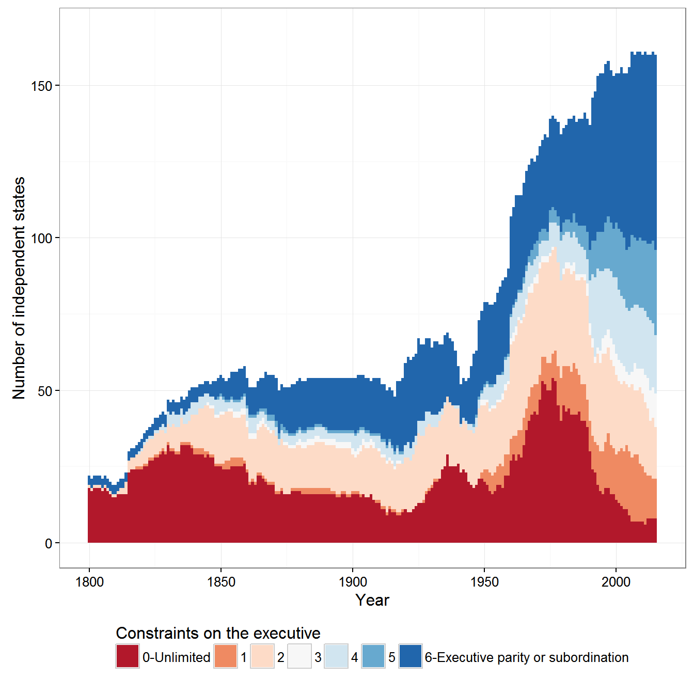
Extensions are left as an exercise for the reader.
Figure 2.9: Military-led Regimes
Original figure
This figure uses data from Geddes, Wright, and Frantz (Geddes, Wright, and Frantz 2014).
data <- all_gwf %>%
mutate(gwf_simplified = ifelse(grepl("military",gwf_full_regimetype),
"Non-democratic with significant military participation",
ifelse(grepl("democracy", gwf_full_regimetype),
"Democracy",
"Other non-democratic")))
data$gwf_simplified <- forcats::fct_relevel(as.factor(data$gwf_simplified),
"Non-democratic with significant military participation",
"Other non-democratic")
ggplot(data = data, aes(x = year, fill = gwf_simplified))+
geom_bar(width=1, position="fill") +
theme_bw()+
theme(legend.position="bottom") +
labs(fill = "Regime type",
x = "Year",
y = "Proportion of independent states
with populations greater than 500,000 people") +
guides(fill=guide_legend(nrow=1,title.position="top")) +
scale_fill_brewer(type = "div", palette = "RdBu") +
scale_y_continuous(labels = scales::percent) +
guides(fill=guide_legend(ncol = 1, title.position = "top"))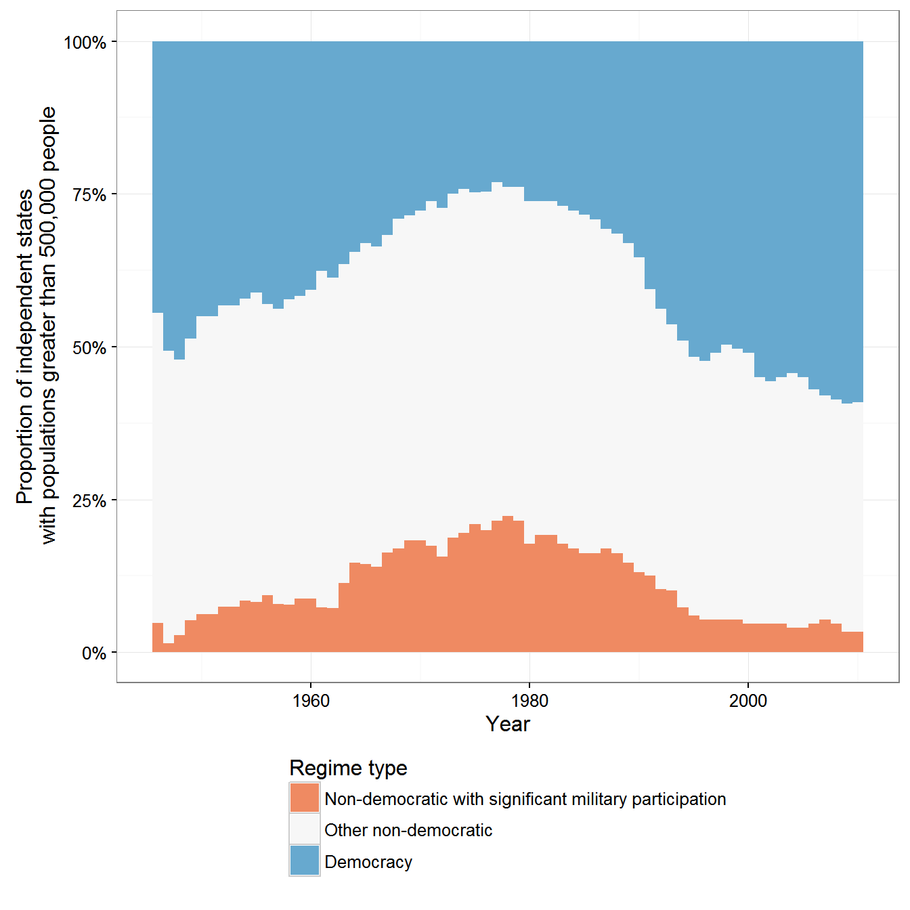
Extension 1: Military regimes according to the number of states in the international system
We can also look at the distribution in terms of the number of actual countries:
ggplot(data = data, aes(x = year, fill = gwf_simplified))+
geom_bar(width = 1) +
theme_bw()+
theme(legend.position="bottom") +
labs(fill = "Regime type",
x = "Year",
y = "Proportion of independent states\nwith populations greater than 500,000 people") +
guides(fill=guide_legend(nrow=1,title.position="top")) +
scale_fill_brewer(type = "div", palette = "RdBu") +
guides(fill=guide_legend(ncol = 1, title.position = "top"))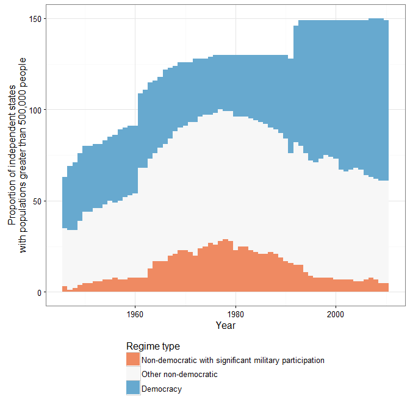
Extension 1: Military regimes by state
And of course we can disaggregate these numbers by state:
ggplot(data = data,
aes(x = fct_rev(reorder(as.factor(country_name),
year,
FUN = min)),
y = year)) +
geom_tile(data = data,
aes(fill = gwf_simplified)) +
theme_bw() +
coord_flip() +
labs(x = "", fill = "Regime type") +
theme(legend.position = "top") +
guides(fill = guide_legend(ncol = 1, title.position="top")) +
scale_y_continuous(breaks = unique(c(data$year[ data$year %% 10 == 0],
max(data$year),
min(data$year))))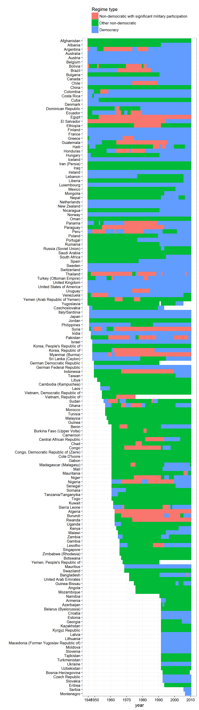
References
Boix, Carles, Michael Miller, and Sebastian Rosato. 2012. “A Complete Data Set of Political Regimes, 1800–2007.” Comparative Political Studies 46 (12): 1523–54. doi:10.1177/0010414012463905.
Geddes, Barbara, Joseph Wright, and Erica Frantz. 2014. “Autocratic Breakdown and Regime Transitions: A New Data Set.” Perspectives on Politics 12 (1): 313–31. doi:10.1017/S1537592714000851.
Gleditsch, Kristian. 2010. “Expanded Population Data.” http://privatewww.essex.ac.uk/~ksg/exppop.html.
Gleditsch, Kristian, and Michael D. Ward. 1999. “Interstate System Membership: A Revised List of Independent States Since the Congress of Vienna.” International Interactions 25 (4): 393–413. doi:10.1080/03050629908434958.
Marshall, Monty G., Ted Robert Gurr, and Keith Jaggers. 2010. “Polity IV Project: Political Regime Characteristics and Transitions, 1800-2009.” Data set. Center for Systemic Peace. http://www.systemicpeace.org/inscr/inscr.htm.
Márquez, Xavier. 2016. “A Quick Method for Extending the Unified Democracy Scores.” Available at SSRN 2753830. doi:10.2139/ssrn.2753830.
Pemstein, Daniel, Stephen Meserve, and James Melton. 2010. “Democratic Compromise: A Latent Variable Analysis of Ten Measures of Regime Type.” Political Analysis 18 (4): 426–49. doi:10.1093/pan/mpq020.
Przeworski, Adam. 2013. “Political Institutions and Political Events (PIPE) Data Set.” Data set. Department of Politics, New York University. https://sites.google.com/a/nyu.edu/adam-przeworski/home/data.
Skaaning, Svend-Erik, John Gerring, and Henrikas Bartusevičius. 2015. “A Lexical Index of Electoral Democracy.” Comparative Political Studies 48 (12): 1491–1525. doi:10.1177/0010414015581050.